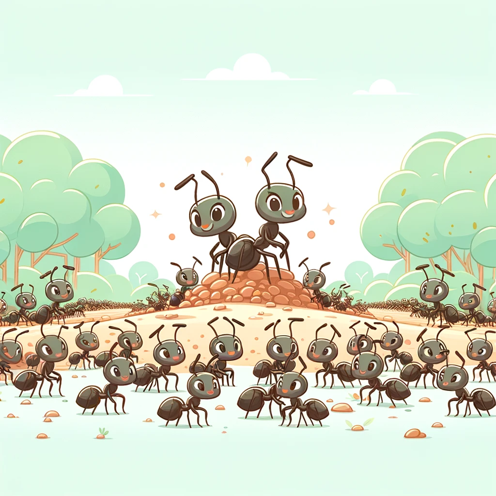
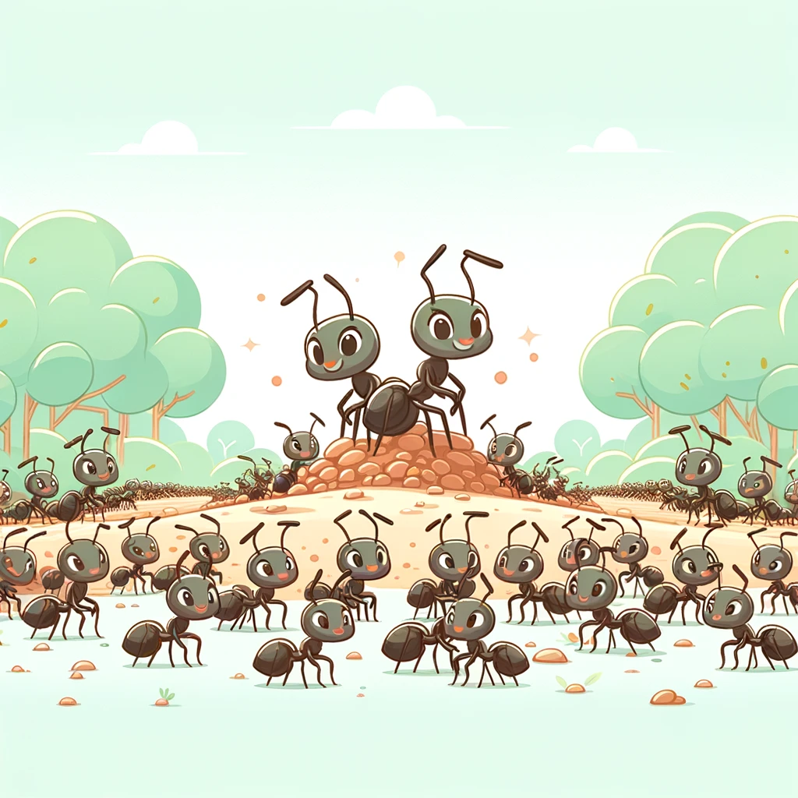

매
도전적인 행동파
매는 매는 매우 민첩하고 빠른 동물로, 날카로운 시야와 빠른 반사 신경을 지니고 있는 동물로 이와 같은 사람들은도전적인 상황을 즐기며 새로운 기회를 탐색하는 데 능숙합니다.
매는 또한용감하고 결단력있으며, 자신의 능력을 믿고 행동합니다.
이들은 어려운 상황에서도 주저하지 않고 적극적으로 문제를 해결하려 하며, 실용적이고 현실적인 접근 방식을 선호합니다.
장점
• 결단력과 실행력 : 매는 목표를 정하면 즉시 행동에 옮기며, 신속하게 결정을 내립니다.
이러한 특성은 어려운 상황에서도 신속하고 효과적인 대응을 가능하게 합니다.
• 모험심과 도전 정신 : 매는 새로운 경험을 즐기고 도전을 두려워하지 않습니다.
이들은 위험을 감수하면서도 기회를 찾고, 이를 통해 성취를 이루는 것을 좋아합니다.
• 적응력 : 다양한 환경에서 빠르게 적응할 수 있으며, 변화에 유연하게 대응합니다.
• 관찰력 : 매는 뛰어난 관찰력을 지니고 있어, 주변 환경을 잘 파악하고 기회를 놓치지 않습니다.
단점
• 충동적 행동 : 매는 때로는 깊이 생각하지 않고 즉흥적으로 행동하는 경향이 있어, 예상치 못한 결과를 초래할 수 있습니다.
• 인내심 부족 : 장기적인 계획보다는 즉각적인 결과를 선호하여, 인내심이 필요한 상황에서 어려움을 겪을 수 있습니다.
또한 항상 가까운 사람들과 함께 있으려 하며 이는 독립적인 활동을 필요로 하는 상황에서 어려움을 초래할 수 있습니다.
• 위험 감수 : 매는 모험을 즐기기 때문에 때로는 과도한 위험을 감수할 수 있습니다.
• 관계 유지의 어려움 : 매우 독립적이고 개인주의적인 성향이 강해, 깊은 관계를 유지하는 데 어려움을 겪을 수 있습니다.
• 궁합이 좋은 동물은?
 

까마귀&개미
매와 까마귀는 모두 모험심이 강하고 지적인 도전을 즐기는 성향이 있습니다.
이들은 함께 다양한 문제를 해결하며, 서로에게 영감을 줄 수 있습니다.
매와 개미는 둘 다 실행력이 뛰어나며, 목표를 달성하기 위해 노력 합니다.
이들은 서로의 보완 보완하며 협력 할 수 있습니다.
• 궁합이 안맞는 동물은?


고양이 & 골든 리트리버
고양이는 감성적이고 내향적인 성향이 강하며, 매의 충동적이고 외향적인 성향과 상충 될 수 있습니다.
이로 인해 두 동물 간의 갈등이 발생할 수 있습니다.
골든 리트리버는 안정적이고 보호적인 성향이 강해, 매의 모험심과 위험 감수 성향을이해하기 어려워할 수 있습니다.